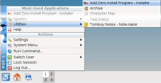

Shortcuts provide an easy way to run a program without entering the full URI, just like a bookmark in a web-browser provides an easy way to return to a web page without entering the full URL.
Different environments provide different ways to add shortcuts:
GNOME
Choose Zero Install -> Add New Program from the Applications menu. Type in the URI, or drag it from the web-browser into the dialog box.
Ubuntu users: You need to open and then close the menu editor after adding a program before it will show up; see Ubuntu bug #191958. You can also run programs directly by choosing Manage Programs from the menu.
KDE
Choose Add Zero Install Program from the Utilities menu. Type in the URI, or drag it from the web-browser into the dialog box.

ROX
Drag the link from your web-browser to the AddApp program, then drag the launcher from there to wherever you want it. AddApp's page has more details.

Finder
Copy the link from your web-browser to the AddApp program, then save the launcher from there to wherever you want it.

Windows
See Desktop integration for details.
Shell
The 0install add command can be used to create little shell scripts to start programs easily:
$ 0install add rox-edit http://rox.sourceforge.net/2005/interfaces/Edit
The command puts the script in the first writable directory in your $PATH. You can now run Edit like this:
$ rox-edit